your feed,
redrawn as
posters.
Plakat turns every YouTube thumbnail and channel avatar into a generative poster. Each channel gets its own series — Swiss, Bauhaus, Constructivist, ’60s jazz or Ma 間 — and every video is a new variant of it.
Runs entirely in your browser. No account, no tracking.
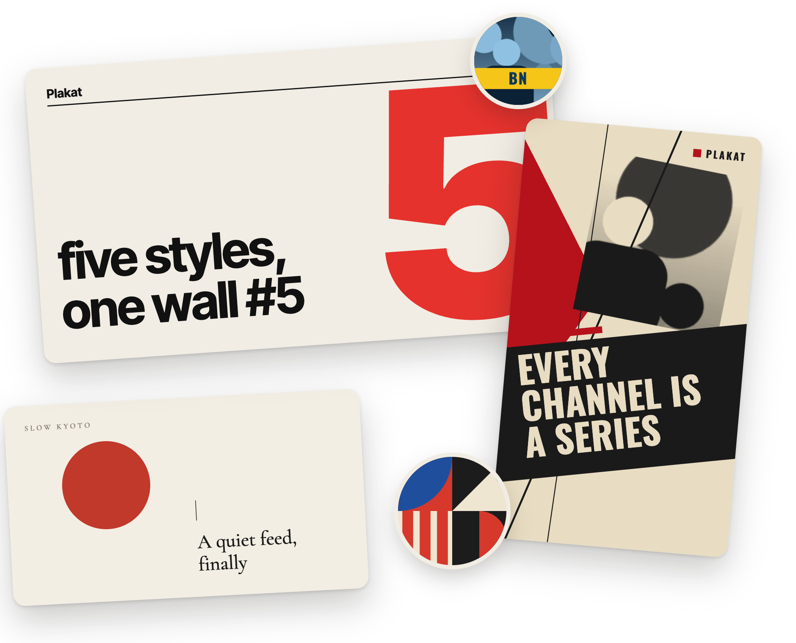
01 — Flip the switch
Same feed. A different wall.
Press Alt+Shift+P on YouTube to switch between the originals and the posters. Hover any poster or avatar to peek at what is underneath.
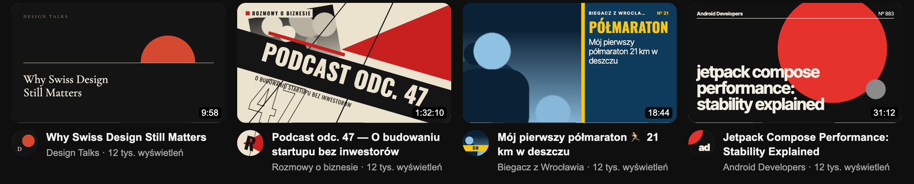
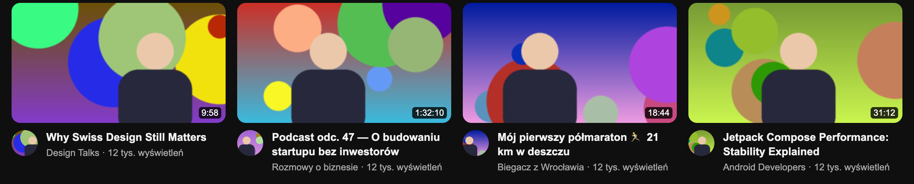
02 — Five styles
Five design traditions. Each channel gets one.
Szwajcarski
Swiss
A grid, grotesque type and one loud gesture: a giant episode number, a circle or concentric rings. Titles run lowercase and flush left under a hairline with the channel and a serial number.
- Avatar
- A monogram beside a quarter circle in the channel’s accent.
- Typeface
- Inter Tight
- Palette
- One of six palettes, fixed for this channel.
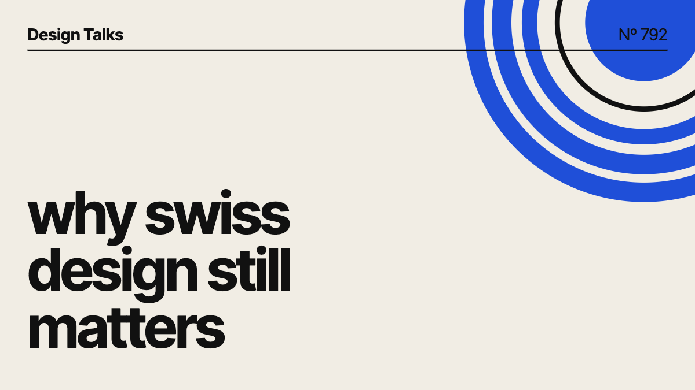
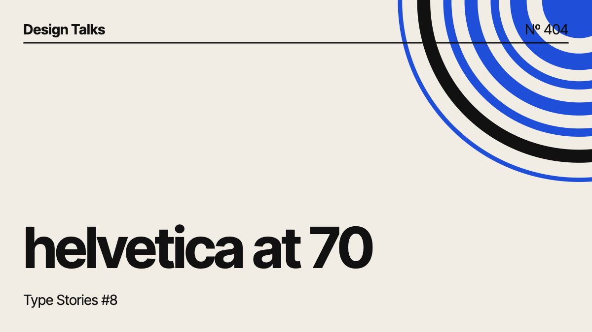
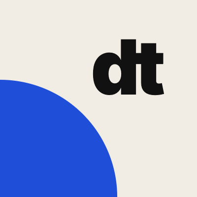
Design Talks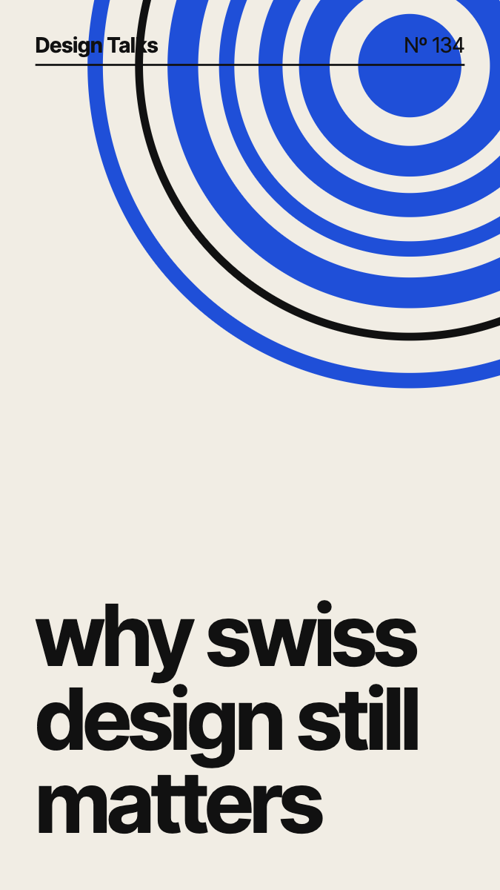
03 — How it works
Seeded, so a channel always looks like itself.
The channel picks the series
A random generator seeded with the channel chooses the style, the palette and the traits of the series: the layout, a vocabulary of shapes, a tilt.
Every video is a variant
A second generator, seeded with the video, moves and sizes things. The title is read too: episode numbers become giant numerals, the strongest word becomes the headline.
The avatar joins the series
Avatars next to videos, in search, in your subscriptions, on the watch page and in channel headers share the channel’s palette and forms. Comment authors keep their faces.
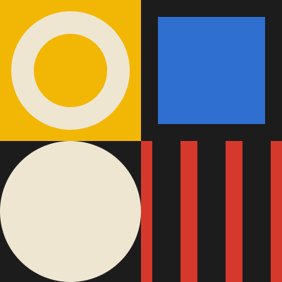
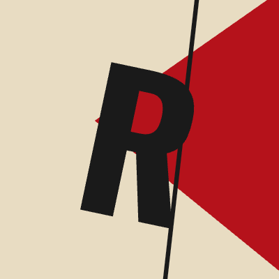
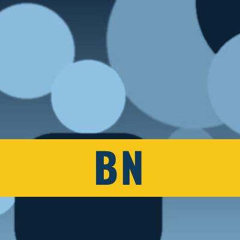
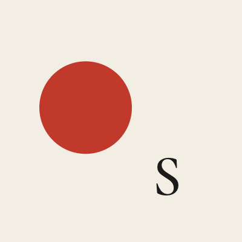
Five channels, five series. The circle beside a title always matches the poster above it.
- Manifest V3Plain scripts, no bundler, no build step.
- Trusted Types–safeEvery poster is built with createElementNS. No innerHTML.
- DeterministicSame channel, same series, on every visit and every device.
- Light on the pageOnly what is near the viewport renders, and renders are cached.
04 — Make it yours
Pin it, reroll it, or design your own.
- Pin a style to any channel you have seen.
- Reroll a channel for a new palette and composition.
- Build your own style: engine, typeface, case, composition, density and palettes, previewed on the channel’s real titles.
- Share styles as JSON.
The settings are in Polish for now.
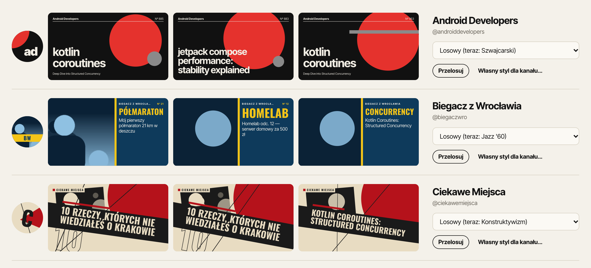
05 — Install
hang the posters in a minute.
- Clone or download the repository from GitHub.
- Open
chrome://extensionsand turn on Developer mode. - Click Load unpacked and pick the folder with
manifest.json. - Open YouTube. Alt+Shift+P toggles the posters.
git clone https://github.com/MBratkowski/plakat.git
Open on GitHub
Not in the Chrome Web Store yet.